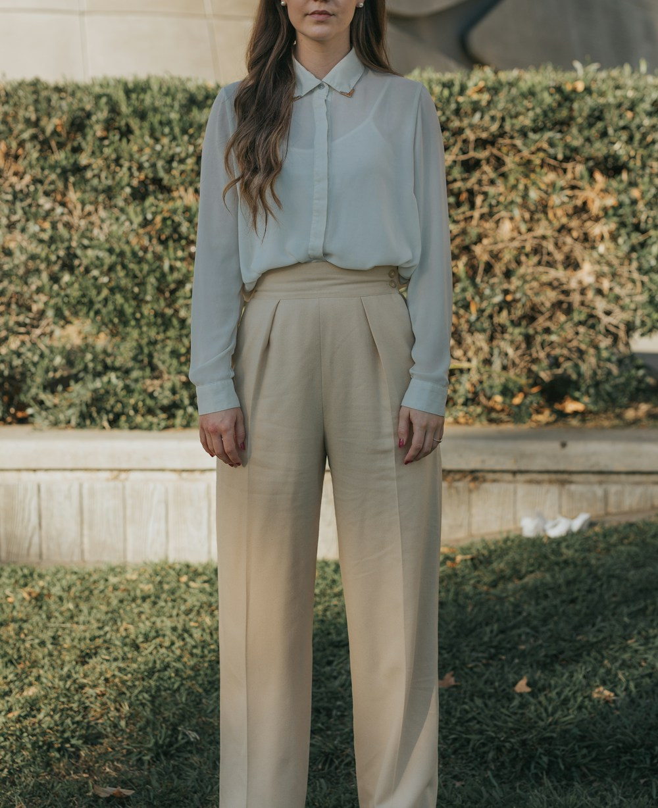

Born from the Glacial Ridges of Zermatt
Alpine Coat Gem was founded on a singular conviction: that true luxury outerwear must never compromise between sub-zero survival performance and sartorial perfection. For decades, the outerwear market forced clients to choose between bulky, synthetic, logo-heavy ski parkas and elegant wool overcoats that soaked through in freezing mountain blizzards.
We set out to eliminate that compromise. By pairing double-faced storm-system cashmere from Biella, Italy, with 900-fill-power ethical Polish goose down and free-floating horsehair canvas foundations, we created a new category: Haute Horlogerie Outerwear.
The Zero-Plastic Philosophy
We refuse to use synthetic poly-fill batting or toxic fluorochemical coatings. Every component—from raw buffalo horn buttons to natural aerogel thermal barriers—is chosen for permanent performance and ecological purity.

The Three Tenets of Alpine Coat Gem
Every bespoke commission is governed by uncompromising technical and sartorial standards.
Full Canvas Tailoring
Every overcoat is constructed with a free-floating chest piece of unbleached wool and genuine horsehair, hand-padstitched with over 3,000 invisible tension stitches.
900-Fill Ethical Down
Sourced exclusively from free-range Polish geese during natural seasonal molting, offering certified Responsible Down Standard (RDS) traceable cluster purity.
PFAS-Free Weatherproofing
We reject persistent fluorochemical coatings (C8/C6), utilizing bio-based dendritic polyurethane membranes that breathe at 20,000 g/m²/24h while stopping storms.
Experience the Atelier on Mercer Street
Step inside our private fitting rooms at 181 Mercer Street, New York, NY 10012, where our master tailors will guide you through our library of over three hundred alpine cashmeres, tweeds, and shearling pelts.
Schedule Private Fitting Appointment